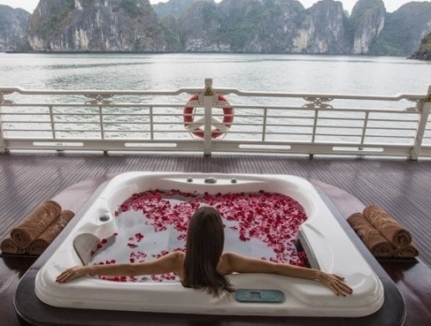

Intresting Facilities
If you are planning a trip to Halong Bay while feeling lost and overwhelmed with all the blog post
and information that roam the vast internet world about Halong Bay and beyond,
this ultimate travel guide will give you everything you need to know to plan your perfect trip to Ha Long Bay.
Halong Bay Hotel
With accommodations ranging from 3-stars to 5-stars and unique experiences to offer.

Campus
world natural wonder is to jump onto a boat cruising to the far-most corners where there are hidden lagoons,